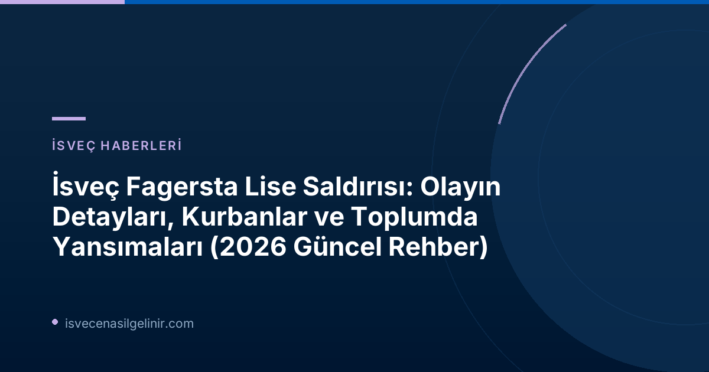

Fagersta Lise Saldırısı: Ne Oldu?
Olayın tam olarak ne zaman ve nasıl gerçekleştiği, saldırının boyutu ve ilk müdahale bilgileri.
Olayın Kronolojisi ve Detayları
Brinellskolan Lisesi'nde Cuma öğleden sonra yerel saatle 14:00 civarında yaşanan olay, SOS alarm'a gelen ihbarla başladı. 18 yaşındaki bir şüpheli, bir kılıç kullanarak okulda bulunan kişilere saldırdı. Polis ekiplerinin hızlı müdahalesiyle zanlı olay yerinde yakalandı.
Olay Bilgileri
| Yer | Brinellskolan Lisesi, Fagersta, Västmanland, İsveç |
| Tarih | 21 Ağustos 2026 (Cuma) |
| Saat | Yaklaşık 14:00 |
| Saldırı Aracı | Kılıç |
| Saldırgan | 18 yaşlarında bir erkek (eski öğrenci olduğu iddia edildi) |
| Kurbanlar | 1 ölü (17 yaşında kız çocuğu), 3 yaralı (2'si ağır, 1'i taburcu edildi) |
Kurbanlar ve Yaralıların Durumu
Saldırıda 17 yaşındaki bir kız öğrenci ne yazık ki hayatını kaybetti. Ailesi, Fagerstaposten gazetesine yaptıkları açıklamayla bu acı haberi doğruladı. İki kişinin durumu ağır olup hastanede tedavi altına alınmış, bir diğer yaralı ise hastaneden taburcu edilmiştir. Toplum, bu gençlerin ve ailelerinin yaşadığı derin acıyı paylaşmaktadır.
Şüpheli Hakkında İlk Bilgiler
Polis, saldırıyı gerçekleştiren 18 yaşlarındaki erkeği olay yerinde yakalamıştır. Edinilen bilgilere göre, şüphelinin daha önce Brinellskolan Lisesi'nde öğrenim görmüş olabileceği belirtilmektedir. Polis, şüphelinin tek başına hareket ettiğine inanmakta olup, saldırının nedeni hakkında henüz kesin bir bilgi bulunmamaktadır. Soruşturma titizlikle devam etmekte, deliller toplanmakta ve olayla ilgili tanıkların ifadeleri alınmaktadır.
Toplumsal Tepkiler ve Destek Mekanizmaları
Bu tür trajik olaylar, toplumda derin yankılar uyandırır ve güvenlik endişelerini beraberinde getirir. İsveç medyası ve sivil toplum kuruluşları, bu zor zamanlarda halka destek olmak için aktif rol oynamaktadır.
Resmi Açıklamalar ve Medya Yaklaşımı
SVT Nyheter gibi önde gelen haber kuruluşları, bu kritik süreçte yalnızca teyit edilmiş bilgileri paylaşmaya özen göstermektedir. Sosyal medyada hızla yayılan asılsız söylentilere karşı, resmi kaynaklardan doğrulanan bilgilere itibar etmek büyük önem taşımaktadır. Polis, soruşturmanın gizliliğini koruyarak kamuoyunu düzenli olarak bilgilendirmektedir.
Rädda Barnen'den Psikolojik Destek Önerileri
Çocukları ve gençleri derinden etkileyen bu tür olaylar sonrası, psikolojik destek hayati önem taşır. Rädda Barnen'den (Çocukları Kurtarın Derneği) psikoterapist Anna Båfält, korku ve endişe duyanlar için şu üç önemli tavsiyede bulundu:
- **Duygularınızı paylaşın:** Korku, üzüntü veya endişe gibi duyguları tek başına yaşamak yerine güvendiğiniz bir yetişkinle (ebeveyn, öğretmen, yakın arkadaş) konuşmak rahatlatıcı olabilir.
- **Rutininize devam edin:** Mümkün olduğunca günlük rutinlerinizi sürdürmek, belirsizlik hissini azaltmaya ve normalleşmeye yardımcı olur.
- **Bilgiyi sınırlandırın:** Sürekli haber takibi yapmak yerine, güvendiğiniz kaynaklardan belirli aralıklarla bilgi almak, aşırı kaygı duymanızı engelleyebilir. Gerekirse uzmanlardan yardım alın.
Saldırının ardından Fagersta ve çevresindeki birçok belediye, taziye etkinlikleri düzenleyerek ve anma işaretleri yakarak kurbanları anma kararı almıştır.
sverigemedborgarskapsprov.com adresinde, İsveç'teki yaşam, eğitim ve göçmenlik süreçleri hakkında daha fazla faydalı bilgi bulabilirsiniz.
Saldırının Arkasındaki İhtimaller ve Soruşturma Devam Ediyor
Polis, saldırının nedenini ve şüphelinin motivasyonlarını anlamak için çok yönlü bir soruşturma yürütmektedir. Olası bağlantılar ve şüphelinin geçmişi, araştırmanın odak noktalarından biridir.
Trollhättan Bağlantısı ve Tik-Tok Hesabı İncelemesi
SVT'ye ulaşan bilgilere göre, 18 yaşındaki şüphelinin Trollhättan'da 2015 yılında meydana gelen benzer bir okul saldırısından esinlenmiş olabileceği iddia edilmektedir. Bu iddia üzerine, şüphelinin Tik-Tok hesabının incelendiği ve şiddet eylemlerini yücelten içerikler paylaşmış olabileceği öne sürülmüştür. Västernorrland'dan gelen şüphelinin, sosyal hizmetlerden gelen ihbarlar üzerine Fagersta'da bir aile yanına yerleştirildiği bilgisi de soruşturmanın derinliğini artırmaktadır. Bu bağlantılar, saldırının planlı olup olmadığı ve arka planındaki motivasyonların karmaşıklığını göstermektedir.
İsveç'te Okul Güvenliği ve Alınacak Dersler
Bu tür saldırılar, İsveç'teki okul güvenliği önlemlerini ve öğrenci destek sistemlerini yeniden gözden geçirmeyi zorunlu kılmaktadır. Toplum ve eğitim otoriteleri, benzer olayların tekrar yaşanmaması için ne gibi adımlar atılabileceğini tartışmaktadır. Özellikle ruh sağlığı hizmetlerine erişimin artırılması ve potansiyel risk teşkil eden öğrencilerin erken tespiti konuları ön plana çıkmaktadır.
İsveç'te Güvenli Bir Gelecek İçin Bilgiye Ulaşın!
İsveç'teki güncel gelişmeler, eğitim fırsatları, göçmenlik süreçleri ve yasal haklarınız hakkında en doğru ve güncel bilgileri takip etmek için bizi izlemeye devam edin.